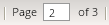
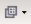
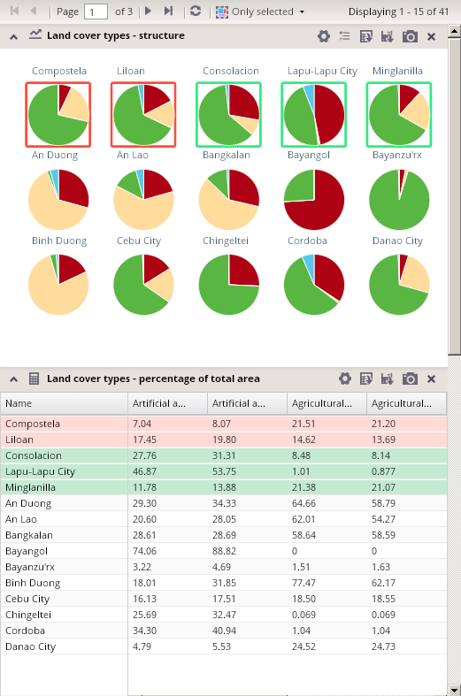
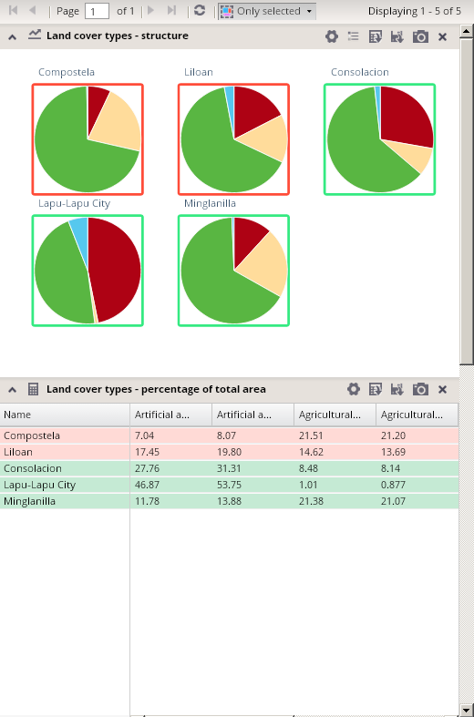
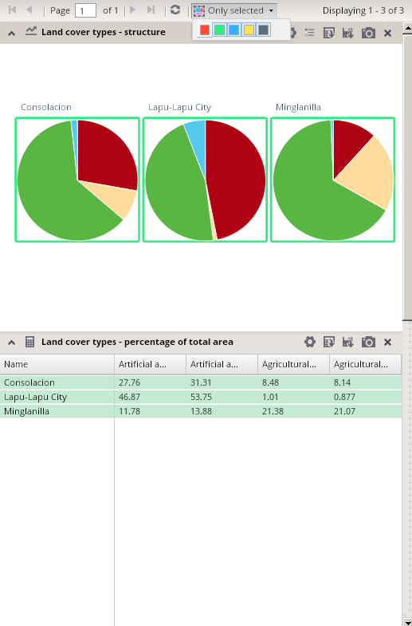

Paging through analytical units
The panel for paging through analytical units is located at the top of the chart panel.
With the exception of scatter charts, a maximum 15 units can be displayed in one chart or table at the same time. The reason for this is an effort to maintain the lucidity of charts in the application.
By default, the first 15 units, in alphabetical order, from the whole sample of analytical units are displayed. In case analytical units are sorted by values of indicators via sorting the table, the first 15 units in this sorted order are displayed.
By clicking on the button, you will display the next 15 units (i.e. the next page). You can get back to previous page by clicking on the icon.
Using the  buttons, you can go to the last or first page (15 analytical units) of the whole sample of analytical units.
buttons, you can go to the last or first page (15 analytical units) of the whole sample of analytical units.
It is also possible to directly set the number of the page that should by shown, by typing the page number into the paging box and then pressing the ENTER button: .
Either all 15 units on the page, or only currently selected units, can be displayed in charts and tables, using the button in the paging panel.
Once the "selected only" mode is activated, only selected units are displayed in charts and tables in the chart panel. The "Selected only" mode remains activated until it is deactivated by another clicking on the panel or until all selections are canceled.

It is possible to deactivate some selection colors by clicking on it in an expanded version of the "Selected only" button. This expanded version is activated via clicking on the small arrow on the right side of the button.
